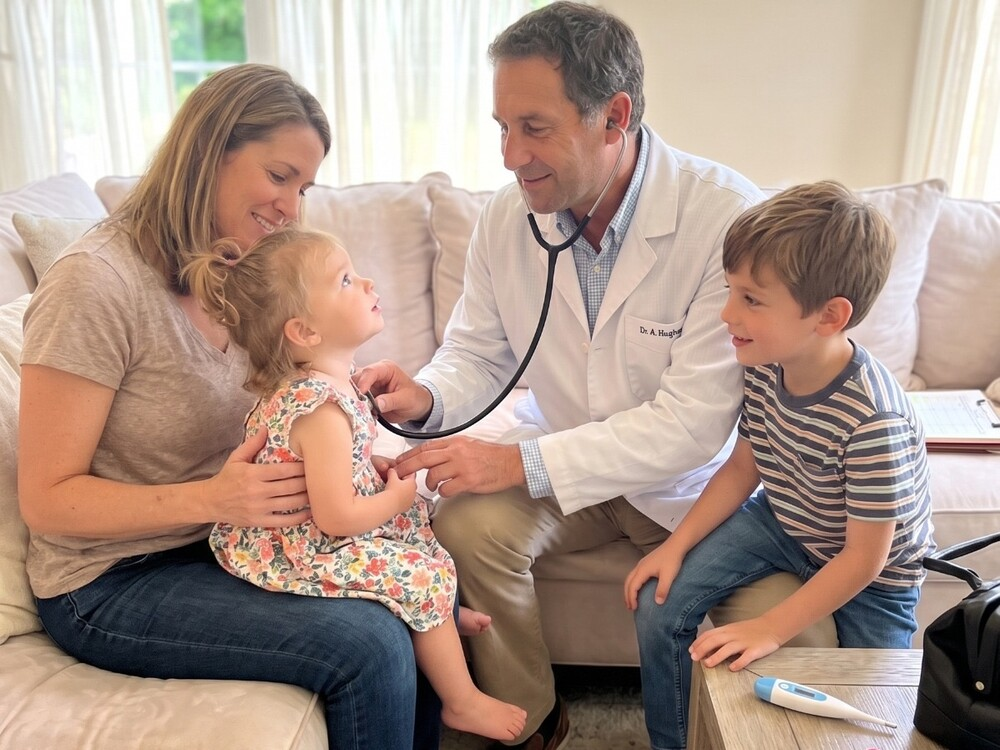

Atención pediátrica en tu casa, sin apuro y sin sala de espera. Controles del recién nacido, seguimiento del crecimiento y urgencias no críticas — siempre con el mismo médico, que conoce la historia de tu familia y sigue disponible entre consulta y consulta.

No es culpa de los pediatras. Es un sistema que mide el trabajo médico en pacientes por hora, y en el que una consulta de calidad se volvió una excepción que hay que buscar.
“Dejé de ejercer la pediatría que quería el día que empecé a mirar el reloj mientras una mamá me hablaba. Este servicio existe para no volver a hacer eso nunca más.”
Dr. Alan Hughes
Existe otra forma de hacer esto. No es nueva: es la de siempre, con la agenda ordenada de otro modo.
Una consulta pediátrica a domicilio no es una visita apurada al hogar. Es trasladar la calidad de un consultorio de excelencia al único lugar donde tu hijo está completamente cómodo: su casa. Con su cuna, sus juguetes, su temperatura, su gente.
Me saco el abrigo, me siento y saludo primero a tu hijo, por su nombre. El maletín se abre después.
Quince minutos en los que hablás vos, sin que te interrumpa. Todo lo que observaste, todo lo que te preocupa, todo lo que no te animaste a preguntar en otro lado.
Examen completo en su ambiente. Le explico a tu hijo qué le voy a hacer y le pido permiso. Un chico al que se le explica coopera — y aprende que su cuerpo es suyo.
En castellano, sin jerga. Qué encontré, qué hacemos, qué signos mirar y a quién llamar. Y una última pregunta antes de irme: ¿qué quedó sin responder?
Todo lo anterior solo es posible con una agenda deliberadamente corta. Por eso trabajo con un número limitado de familias por año. No es una estrategia comercial: es la condición que hace posible la consulta que prometo.
Reservar turno a domicilioSoy Alan Hughes, médico pediatra. Me formé en el Hospital Virgen del Carmen de Zárate y en el Hospital Tornú de la Ciudad de Buenos Aires, donde aprendí la pediatría que se practica cuando hay poco tiempo y mucha demanda.
Aprendí bien. Y también aprendí lo que se pierde.
Se pierde la pregunta que la mamá tenía guardada y no llegó a hacer. Se pierde el dato que no aparece en los primeros diez minutos y que a veces cambia el diagnóstico. Se pierde la posibilidad de mirar a un chico a los ojos y explicarle qué le está pasando en su propio cuerpo.
Este servicio nació de una decisión concreta: atender a menos familias para poder atenderlas como creo que hay que hacerlo. En su casa, con el tiempo necesario, y siendo siempre el mismo médico que conoce su historia.
No es un modelo para todo el mundo. Es para familias que valoran esto lo suficiente como para elegirlo.
Elegí el tipo de consulta y reservá el horario que te quede cómodo. Las dos modalidades son siempre en tu casa.
Controles del niño sano, seguimiento del desarrollo y consultas programadas.
Reservar control →Fiebre, cuadros respiratorios y otras urgencias no críticas, hoy mismo.
Reservar urgencia →Dejanos tus datos y te escribimos para coordinar la visita.
La diferencia entre criar con ansiedad y criar con tranquilidad suele ser tener a quién preguntarle.